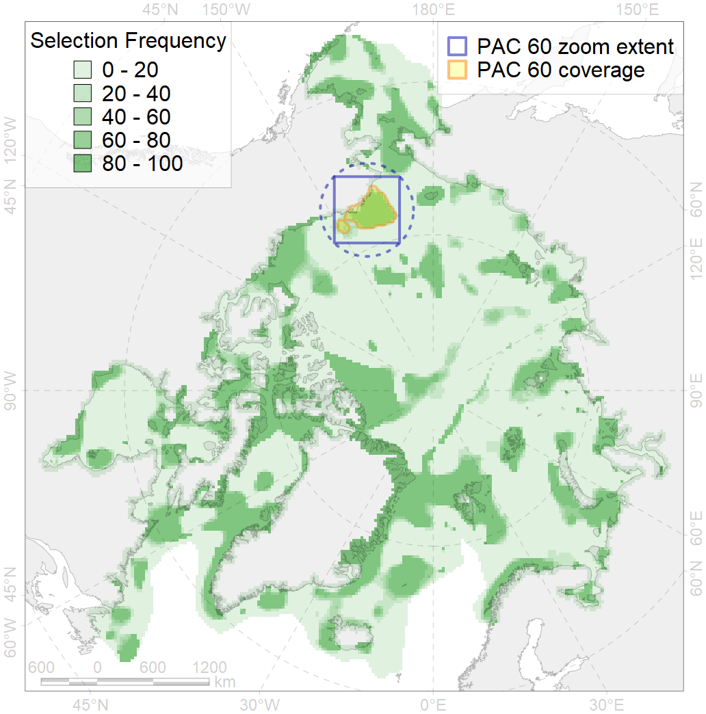
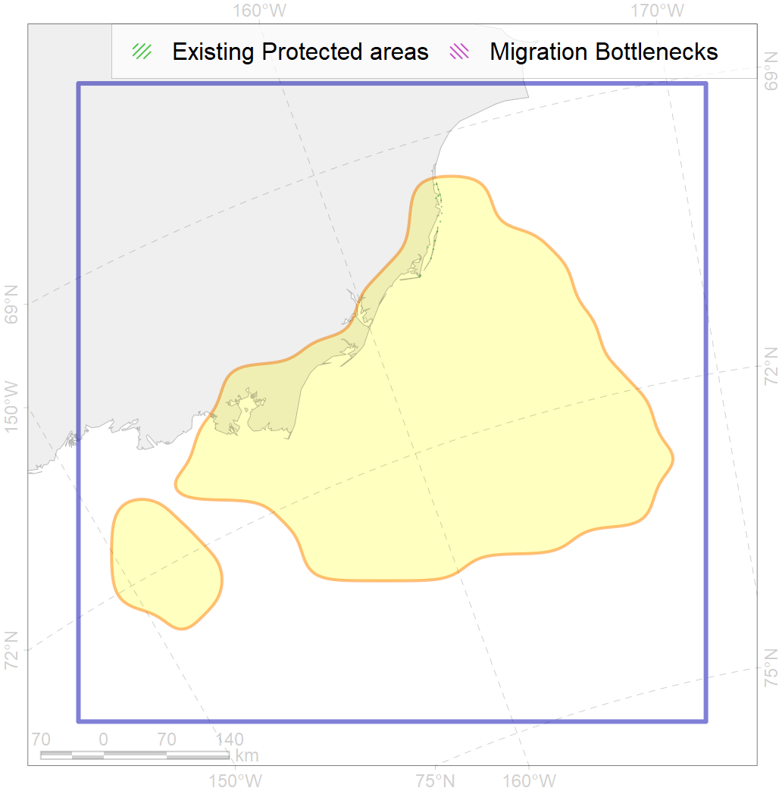

60
For more information regarding this PAC and to conduct custom spatial analysis using the PAC data or any spatial query, please consult Accenter.

0
CFs entirely within the PAC area
13
CFs at least 25% within the PAC area
16
CFs with their target entirely achieved in the PAC
32
CFs with at least 50% of their target achieved in the PAC
| CF ID | CF Name | Proportion in the PAC | Conservation Target | Contribution to ArcNet Target Achievement | PAC’s Contribution to the Achieved Target |
|---|---|---|---|---|---|
| 5021 | Beluga (Delphinapterus leucas), Eastern Chukchi Sea stock, summer grounds / core areas | 88.6% | 72.0% | 95.1% | 93.2% |
| 7004 | Benthic biomass hotspot, north-eastern Chukchi Sea | 73.2% | 72.0% | 96.6% | 96.4% |
| 7223 | Kelp forests, East Chukchi Sea | 71.7% | 30.0% | 138.3% | 99.7% |
| 3108 | Polynya biological communities, Alaska | 67.3% | 12.0% | 430.4% | 97.9% |
| 1016 | Walrus (Odobaenus rosmarus divergens) Pacific population, feeding grounds | 45.1% | 72.0% | 56.7% | 47.7% |
| 2001 | Bearded seal (Erignatus barbatus) foraging areas, Chukchi Sea | 38.7% | 24.0% | 154.3% | 56.4% |
| 7123 | Benthic communities, II.2.1.3. Western Beaufort Sea outer shelf | 37.3% | 38.7% | 71.2% | 54.6% |
| 9016 | Polar bear (Ursus maritimus), Southern Beaufort Sea subpopulation, home range | 37.0% | 32.4% | 100.3% | 47.0% |
| 7079 | Benthic communities, I.2.1.3. Chukchi Sea banks and shoals | 33.3% | 19.1% | 174.1% | 99.4% |
| 5020 | Beluga (Delphinapterus leucas), Eastern Chukchi Sea stock, summer grounds | 33.0% | 48.0% | 56.4% | 56.3% |
| 7084 | Benthic communities, I.2.2.2. Chukchi Sea canyons | 27.8% | 24.0% | 100.7% | 90.7% |
| 4078 | Fish communities, Wrangel - Beaufort Zoogeographic District, High Arctic Shelf Province, Arctic Region | 26.3% | 16.4% | 146.3% | 48.0% |
| 2038 | Ringed seal (Phoca hispida) feeding grounds, Chukchi Sea | 25.6% | 24.0% | 105.8% | 41.5% |
| 7020 | Benthic communities, Beaufort bathyal Zoogeographic region | 24.7% | 2.0% | 853.5% | 48.5% |
| 6050 | Spectacled eider (Somateria fischeri) moulting grounds | 22.8% | 36.0% | 33.6% | 23.6% |
| 2035 | Ribbon seal (Histriophoca fasciata) feeding grounds, Chukchi Sea | 22.3% | 12.0% | 172.4% | 47.7% |
| 7121 | Benthic communities, II.2.1.1. Western Beaufort Sea inner shelf | 20.3% | 22.2% | 65.9% | 38.4% |
| 2045 | Ringed seal (Phoca hispida) whelping grounds, Chukchi Sea | 19.5% | 24.0% | 74.2% | 42.1% |
| 7081 | Benthic communities, I.2.1.5. Chukchi Sea shelf valleys | 19.5% | 20.3% | 90.2% | 44.6% |
| 4013 | Bering cisco (Coregonus laurettae), American populations, feeding/nursery grounds | 19.0% | 32.4% | 46.0% | 44.2% |
| 5116 | Beluga (Delphinapterus leucas), Eeastern Beaufort Sea stock, autumn grounds, core areas | 17.7% | 24.0% | 65.5% | 48.0% |
| 5109 | Bowhead whale (Balaena mysticetus), Bering-Chukchi-Beaufort population, summer grounds / core areas | 17.0% | 86.4% | 16.7% | 16.0% |
| 2008 | Bearded seal (Erignatus barbatus) whelping grounds, Chukchi Sea | 16.5% | 24.0% | 62.6% | 41.7% |
| 3030 | MIZ biological communities, July, Chukchi Sea | 16.3% | 24.0% | 63.7% | 54.1% |
| 5117 | Beluga (Delphinapterus leucas), Eeastern Chukchi Sea stock, autumn grounds, core areas | 16.3% | 24.0% | 54.4% | 31.6% |
| 1018 | Walrus (Odobaenus rosmarus divergens) Pacific population, summer-autumn grounds | 16.0% | 24.0% | 60.7% | 26.0% |
| 4005 | Capelin (Mallotus villosus catervarius) spawning grounds, Alaska | 15.8% | 18.0% | 65.5% | 17.2% |
| 7037 | Benthic communities, Transitional Zoogeographic zone, Amerasian shelf | 15.4% | 10.6% | 136.5% | 82.8% |
| 4022 | Inconnu (Stenodus leucichthys nelma), American populations, feeding grounds | 15.4% | 32.4% | 35.2% | 21.5% |
| 7122 | Benthic communities, II.2.1.2. Western Beaufort Sea middle shelf | 15.0% | 18.1% | 48.7% | 23.7% |
| 5105 | Bowhead whale (Balaena mysticetus), Bering-Chukchi-Beaufort population, autumn grounds | 14.6% | 28.8% | 44.6% | 35.1% |
| 5052 | Gray whale (Eschrichtius robustus) summer feeding grounds | 14.3% | 36.0% | 35.2% | 16.2% |
| 7080 | Benthic communities, I.2.1.4. Chukchi Sea shelf plains | 13.7% | 3.8% | 327.9% | 37.6% |
| 5106 | Bowhead whale (Balaena mysticetus), Bering-Chukchi-Beaufort population, spring grounds | 12.9% | 57.6% | 17.4% | 17.2% |
| 9001 | Polar bear (Ursus maritimus), Arctic Basin subpopulation, home range | 12.3% | 26.4% | 44.8% | 44.6% |
| 3004 | Fast Ice biological communities, Chukchi Sea region | 12.3% | 6.0% | 133.4% | 20.1% |
| 7077 | Benthic communities, I.2.1.1. Chukchi Sea coastal domain | 12.2% | 26.8% | 29.7% | 27.5% |
| 7130 | Benthic communities, II.2.2.1. Western Beaufort Sea slope | 11.9% | 15.3% | 40.0% | 21.9% |
| 5108 | Bowhead whale (Balaena mysticetus), Bering-Chukchi-Beaufort population, summer grounds | 11.8% | 28.8% | 34.6% | 21.4% |
| 7082 | Benthic communities, I.2.1.6. Chukchi Sea outer shelf with medium to high profile | 11.4% | 8.7% | 123.6% | 71.3% |
| 1017 | Walrus (Odobaenus rosmarus divergens) Pacific population, haulouts | 10.9% | 72.0% | 12.2% | 11.9% |
| 4034 | Taranetz’s charr (Salvelinus taranetzi) feeding grounds | 10.4% | 32.4% | 26.6% | 15.9% |
| 8030 | Biological communities, salt marshes, Beaufort Sea | 10.4% | 30.0% | 20.0% | 12.2% |
| 9034 | Polar bear (Ursus maritimus), Southern Beaufort Sea subpopulation, denning grounds | 9.7% | 64.8% | 9.1% | 9.1% |
| 4016 | Broad whitefish (Coregonus nasus), Euro-Asian populations, feeding grounds | 9.2% | 32.4% | 21.7% | 15.4% |
| 4019 | Vendace, Least cisco (Coregonus sardinellа), American populations, feeding grounds | 8.9% | 24.0% | 28.8% | 14.4% |
| 4050 | Pollock (Theragra chalcogramma) home range | 8.7% | 6.0% | 130.4% | 19.1% |
| 3005 | Fast Ice biological communities, Beaufort Sea region | 8.1% | 6.0% | 94.3% | 8.7% |
| 4009 | Arctic cisco (Coregonus autumnalis), American populations, feeding / nursery grounds | 7.4% | 38.4% | 15.8% | 11.6% |
| 7042 | Benthic communities, Transitional Zoogeographic zone, Beaufort Sea | 6.8% | 19.9% | 22.2% | 6.1% |
| 6027 | Glaucous gull (Larus hyperboreus barrovianus) breeding grounds | 6.4% | 12.0% | 35.2% | 10.9% |
| 2054 | Spotted seal (Phoca largha) feeding grounds | 6.2% | 12.0% | 34.7% | 6.8% |
| 7183 | Benthic communities, VII.3.5. Makarov and Canada basin deep parts of canyons (below slope) | 5.8% | 23.1% | 13.7% | 9.8% |
| 3032 | MIZ biological communities, July, Beaufort Sea | 5.3% | 24.0% | 14.6% | 13.7% |
| 4011 | Lake whitefish (Coregonus clupeaformis) feeding grounds | 4.7% | 38.4% | 9.3% | 8.8% |
| 4044 | Pacific cod (Gadus macrocephalus) home range | 4.7% | 3.0% | 117.6% | 8.0% |
| 6010 | Brent goose (Branta bernicla nigricans) breeding / moulting grounds, America | 4.5% | 24.0% | 9.4% | 6.6% |
| 4070 | Pacific herring (Clupea pallasii) range | 4.4% | 24.0% | 14.9% | 8.4% |
| 6107 | Horned puffin (Fratercula corniculata) breeding colonies foraging range buffer | 4.4% | 24.0% | 14.9% | 5.8% |
| 2042 | Ringed seal (Phoca hispida) whelping grounds, Beaufort Sea | 4.1% | 24.0% | 11.8% | 5.2% |
| 4024 | Chum Salmon (Oncorhynchus keta) home range | 3.8% | 6.0% | 49.0% | 5.8% |
| 4006 | Pacific rainbow smelt (Osmerus dentex) feeding / nursery grounds | 3.3% | 18.0% | 15.4% | 5.8% |
| 4042 | Saffron cod (Eleginus gracilis) home range | 3.2% | 6.0% | 45.3% | 6.7% |
| 2005 | Bearded seal (Erignatus barbatus) whelping grounds, Beaufort Sea | 3.1% | 24.0% | 9.0% | 5.2% |
| 4023 | Pink salmon (Oncorhynchus gorbuscha), native populations, feeding / migration grounds | 2.9% | 6.0% | 40.8% | 6.1% |
| 7083 | Benthic communities, I.2.2.1. Chukchi Sea slope | 2.7% | 15.0% | 16.1% | 9.6% |
| 9004 | Polar bear (Ursus maritimus), Chukchi Sea subpopulation, home range | 2.7% | 32.4% | 6.8% | 5.9% |
| 4065 | Halibut (Reinhardtius hippoglossoides), home range, Pacific Arctic | 2.6% | 3.0% | 78.0% | 8.0% |
| 4077 | Fish communities, Laptev - East-Siberian Seas Zoogeographic District, High Arctic Shelf Province, Arctic Region | 1.3% | 12.0% | 9.8% | 5.2% |